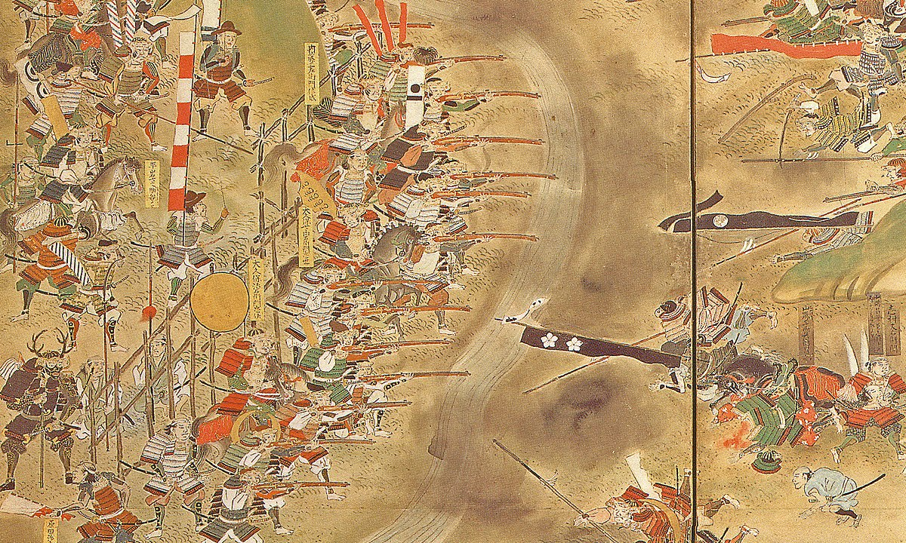
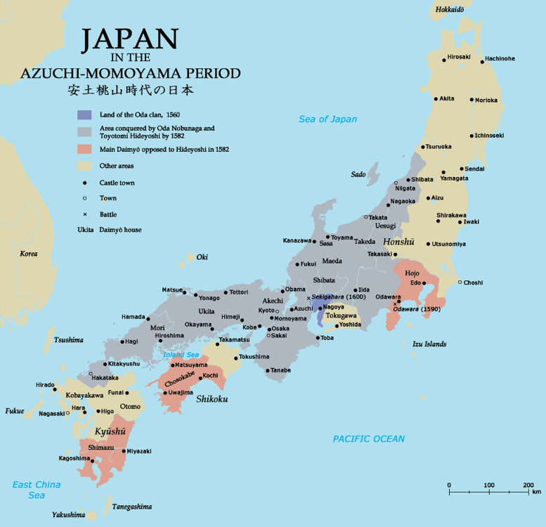
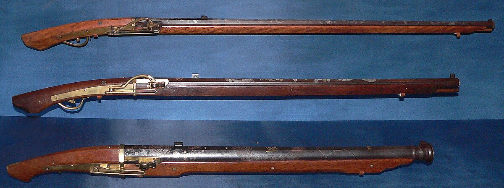
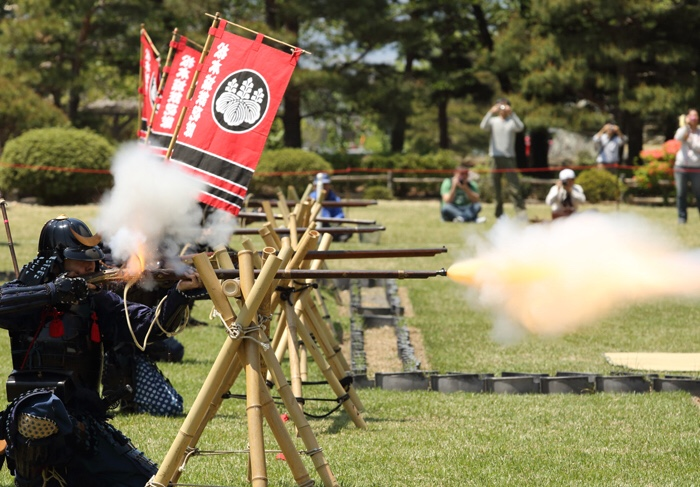
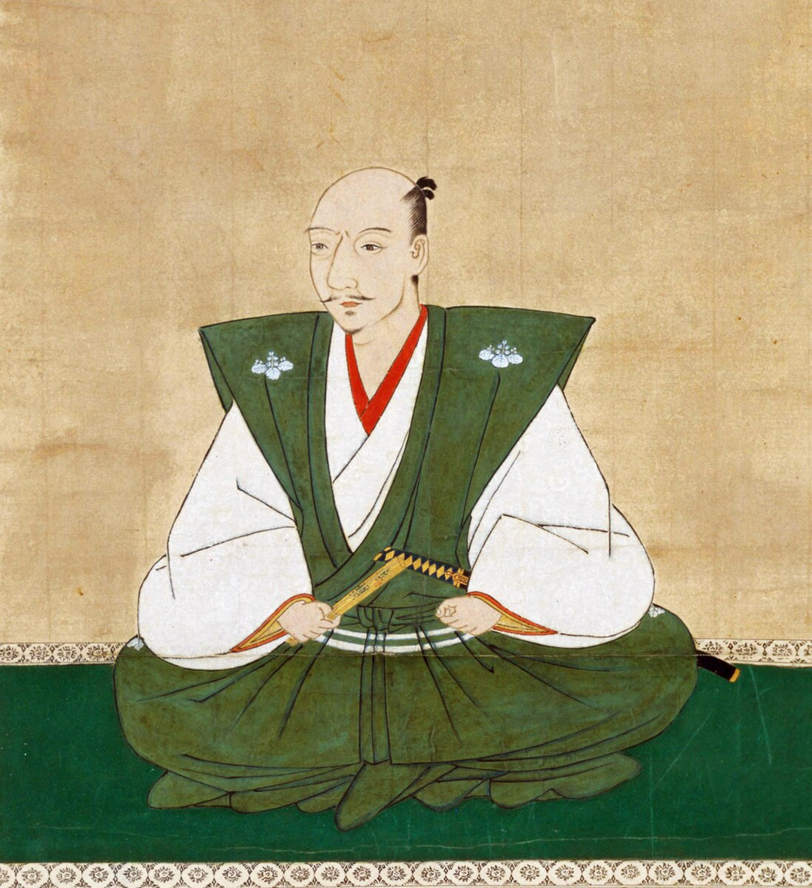
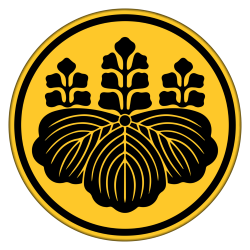
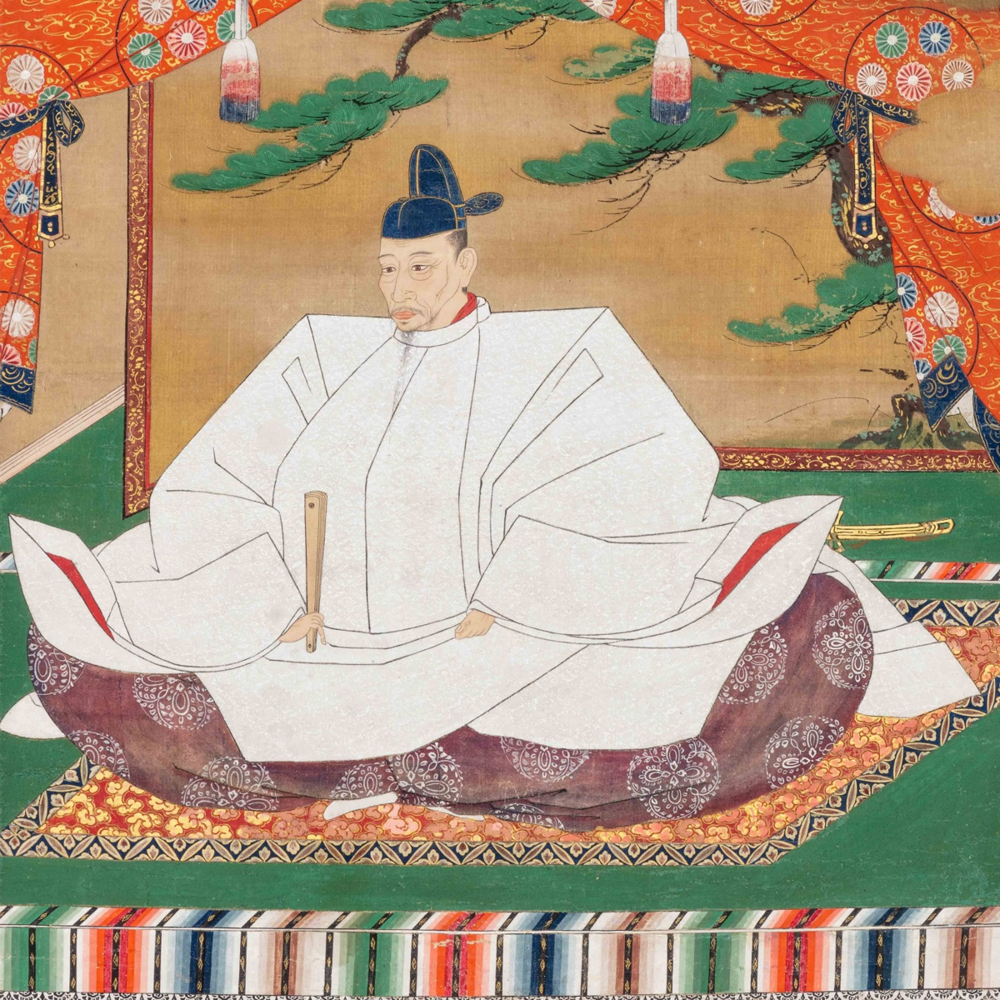
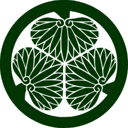
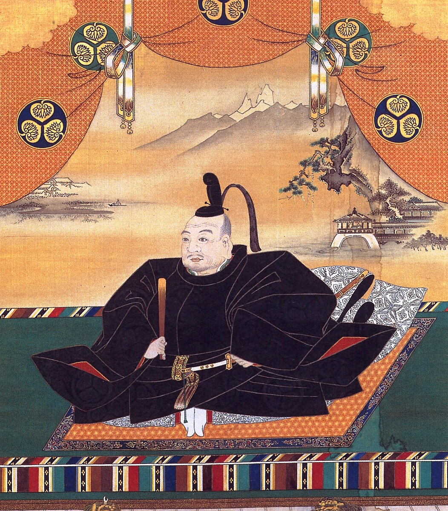

Oda Nobunaga wielded significant power after his march on Kyoto in 1568. While this was happening, there were other notable events happening elsewhere. To take one example, the Uesugi and Takeda clans in the east were at war. Their leaders, Uesugi Kenshin and Takeda Shingen, were staunch rivals and also possibly the two most skilled generals of their age. They fought a series of battles at Kawanakajima, the fourth battle of 1561 being famous for the fact that it is possible that Kenshin and Shingen met and fought each other one-on-one during the battle before being dragged away by their own men for protection. Nobunaga was also involved in conflict with many other clans on his way to Kyoto. The Saito clan was one of these clans, and Nobunaga went to war with them. Nobunaga, through a retainer named Kinoshita Tokichiro, managed to form an alliance of different regional clans to join him in crushing the Saito. The Saito were eventually defeated at the Siege of Inabayama Castle in 1567. It was after this that Nobunaga was able to march on Kyoto with the pretext of installing Ashikaga Yoshiaki as shogun.
Nobunaga then challenged the Asakura clan in Echizen and started marching his army into the province in 1570, a move that Yoshiaki was critical of. This resulted in Yoshiaki secretly turning on Nobunaga, making an alliance composed of anti-Nobunaga lords and other groups opposed to the Oda. The Azai clan, though having a pact with the Oda, broke with them to honour a long-standing alliance with the Asakura. Nobunaga's forces were in danger, and the decision was made to retreat. Nobunaga would later score a victory against the Azai and the Asakura at the Battle of Anegawa in July the same year. Both clans had been fully destroyed by 1573. Another group opposed to Nobunaga was, curiously, the Ikko-ikki, warrior monks of the Jodo Shinshu sect of Buddhism. The Ikko-ikki were bands of monks who formed leagues for the purposes of self-defence in the interests of their temples, especially the Ishiyama-Honganji temple. Despite their Buddhist faith, the Ikko-ikki monks were a formidable and well-trained fighting force, armed even with firearms. Nobunaga was in conflict with the monks who were based in the Ishiyama-Honganji temple complex. This compound was extremely well defended and almost impregnable for Nobunaga. The siege of this temple began in 1570 and would last ten years until the monks surrendered, making the siege one of the longest in history. Buddhist monks in general were a constant issue for Nobunaga, and he retaliated against them. In 1571, Nobunaga attacked the Enryaku-ji temple complex on Mount Hiei, the Tendai buddhist center that was established by Saicho during the early Heian period. The mountain was put to the flame and all those who attempted to escape were massacred by the Oda forces on sight. It was probably because of his opposition to the Buddhist sects that Nobunaga was more tolerant of Christianity, which faced no major issues during Nobunaga's life. In fact, many details we know about Nobunaga come from a Jesuit missionary named Luis Frois who accompanied Nobunaga for years and wrote an account of his time in Japan. It is from this account that we hear of Yasuke, an African man who was brought to Japan by the Portugeuse and who was given a minor warrior rank by Nobunaga. Not much is known about Yasuke as he is never mentioned again after Nobunaga's death, but some modern enthusiasts refer to him as the 'African samurai', and he appears as the protagonist of the 2025 video game Assassin's Creed: Shadows, set during this period in Japan.
Nobunaga then came to blows with the Takeda clan, one of the most powerful clans in Japan and the strongest of Nobunaga's opponents. Takeda Shingen's army advanced into the territory of Tokugawa Ieyasu, Nobunaga's ally, and met the Tokugawa army at the battle of Mikatagahara in 1573. The cavalry units of the Takeda were the finest cavalry of the time and this fact was proved against the Tokugawa. The Tokugawa relied on their guns to deter the cavalry but the Takeda were too powerful and easily overwhelmed the Tokugawa army. Facing total annihilation of his forces, Ieyasu retreated back to a castle with a select few men but made a dangerous gamble by ordering that the castle gates be left open. When the Takeda observed the castle and its open gates, they decided not to attack believing that it was some type of ruse or trap. Thus the Tokugawa were defeated and the surviving forces retreated. Nobunaga would not face Shingen himself, as Shingen died in 1573 being succeeded by his son Katsuyori.

Takeda Shingen, the leader of the Takeda clan, died in 1573 and was succeeded by his son Katsuyori. Katsuyori would continue his father's campaign against the Tokugawa and Oda forces and would begin another offensive against them in 1575. The Takeda armies advanced into the Tokugawa territory of Mikawa and laid siege to Nagashino castle. The main Oda and Tokugawa forces were elsewhere and only a small garrison defended the castle against repeated Takeda assaults. Word did reach Nobunaga and Ieyasu, who came immediately to the castle's defence. The Oda and Tokugawa forces also included hundreds, if not thousands, of matchlock gunners who were positioned behind wooden palisades on a plain near the castle. Another force was sent to relive the siege at the castle. Takeda Katsuyori was not as talented as his father and did not possess the same judgement as him. He launched waves of the Takeda cavalry, much feared at the time, against the palisades, believing that the Oda gunners would be ineffective due to recent rains possibly ruining their supply of gunpowder. He miscalculated and the Oda-Tokugawa forces opened fire on the cavalry, annihilating them. These gunners are believed to have utilised volley fire, having their men line up in rows of three, so that when one gunner fired he would go the back of the line to reload, which he would complete by the time he returned to the front. This meant that they could sustain an almost constant rate of fire. Katsuyori sent wave after wave to be decimated by the gunners, which greatly reduced his forces. Several Takeda generals were killed also. Katsuyori was forced to retreat, and his army would never recover from this battle. The Takeda would be destroy once and for all by Nobunaga in 1582.
Nobunaga gained some legitimacy and recognition from the Imperial Court from which he received various titles, eventually becoming the Minister of the Right, though this was largely ceremonial. He began work on building Azuchi castle near Kyoto in 1576. Nobunaga then set his eyes on the Mori clan of western Honshu, who had sought in previous years to avoid a conflict with Nobunaga. Nobunaga, who now controlled the majority of central Japan, sent his general Kinoshita Tokichiro, now known as Toyotomi Hideyoshi, to lead the campaign against the Mori. Concurrently with this action, Nobunaga clashed with the Uesugi clan still led by Uesugi Kenshin. Kenshin tricked Nobunaga in this battle by getting him to order his forces to cross the Tedorigawa river, then releasing the floodgates on the soldiers. The Oda were forced to retreat and the Uesugi clan won the battle. In 1582, Hideyoshi was unable to successfully besiege the Mori castle at Takamatsu, and he requested support from Oda Nobunaga to defeat the castle. Nobunaga made his way towards western Japan where he stopped in Kyoto for a night.
Nobunaga stayed at the Honno-ji temple for the night. During the night, Nobunaga was alerted and went outside to find the army of Akechi Mitsuhide, one of his generals, marching towards the temple. Mitsuhide had betrayed Nobunaga and ordered his forces to attack him. Nobunaga had only a small group of retainers with him and they fought off the attackers as much as they were able to. However, the situation was futile and Nobunaga retreated into an inner room and committed seppuku, ritual suicide. The temple burned to the ground and Mitsuhide began steps to secure power. The exact reason for Mitsuhide's betrayal is uncertain. Word of Nobunaga's death reached Hideyoshi not long after, who managed to swiftly negotiate a truce with the Mori and headed to face the army of Mitsuhide to avenge his lord. They met at the battle of Yamazaki a few days later, and Hideyoshi soundly defeated Mitsuhide, who was killed by bandits whilst retreating. Hideyoshi was now the successor to Nobunaga, and he sought to consolidate his position. Though he now had to contend with another powerful peer, Tokugawa Ieyasu.

Map of Japan c. 1582


The Portugeuse introduced the arquebus to the Japanese when they landed at Tanegashima in 1543. The earliest recorded evidence of any sort of firearm in Japan predates the Portugeuse arquebus by almost a century, when a record of 1466 describes an official from the Ryukyu Kingdom who was in Kyoto suprising people in Kyoto by a weapon that made a loud bang and fired a projectile. It is unclear what sort of weapon this was. The arquebus introduced by the Portugeuse spread rapidly across Japan and many of the major clans had a ready supply of firearms for their armies. It took some years to develop formations and strategies to maximise the use of firearms in battle. The warrior monks of the Negoro-ji temple made great use of firearms in certain formations, with which they were even able to defeat the Oda in a small battle. Oda Nobunaga's use of firearms at Nagashino with volley fire is the most famous innovation. The proliferation of guns in Japanese warfare peaked in the 1590s and by the end of the century they inflicted 80% of casualties in skirmishes.
Hideyoshi faced some opposition from other generals who had served with Nobunaga. One of these was Shibata Katsuie. Hideyoshi, in order to legitimise himself, acted as a regent for one of Nobunaga's grandsons who he proclaimed to be the successor as head of the Oda. Shibata Katsuie backed another Oda relative, and fought against Hideyoshi at the Battle of Shizugatake in 1583. Hideyoshi won the battle decisively, and Katsuie was destroyed. Now the principal opposing figure to Hideyoshi was Tokugawa Ieyasu, and these two giants fought at the two battles of Komaki and Nagakute in 1584. Both of these battles resulted in a stalemate and both sides inflicted heavy casualties on the other. In the end, a deal was brokered between Hideyoshi and Ieyasu. Hideyoshi's sister and mother were sent to Tokugawa Ieyasu as hostages and in return Ieyasu submitted to Hideyoshi, though he still retained much of his independence. Hideyoshi had now for the most part been confirmed as the leading daimyo in Japan, and he began construction of Osaka Castle, which was built on the site of the Ishiyama-Honganji temple that had been destroyed and defeated in 1580. His status was further strengthened by the receipt of titles from the Imperial Court, including the title of Kampaku, in 1585. He now strove to unify the rest of the country and bring the remaining daimyo under his sway
It was in 1585 that Hideyoshi launched an invasion of the island of Shikoku, which is south of western Honshu and east of Kyushu. The most powerful clan on the island were the Chosokabe, though outnumbered by Hideyoshi's 100,000 stong force, chose to defend their lands. They were defeated and Hideyoshi seized the island, with the Chosokabe now siding with Hideyoshi. Some battles were fought in the east of Japan at the same time. The next year, Hideyoshi invaded Kyushu, which was ruled primarily by the Shimazu clan. The invasion ended when Hideyoshi's forces besieged the Shimazu stronghold of Kagoshima in Satsuma, resulting in the surrender of the Shimazu. Hideyoshi had now fully took control of western Japan, and the eastern provinces now received his attention. The Hojo clan remained the last major opposing force to Hideyoshi, and he went to war with them. The Hojo were besieged at their castle at Odawara, which was eventually weakened and defeated by Hideyoshi's troops in 1590. The Hojo leaders were killed. Hideyoshi had completed the unification of Japan started by Nobunaga and was now the undisputed warrior leader of Japan. The lands of the Hojo in the Kanto plain became the domains of Tokugawa Ieyasu, who set his base at the small town of Edo.
With the country now unified, Hideyoshi took steps to preserve and maintain the peace that he had instituted. One of Hideyoshi's aims was to separate the samurai and warrior class from the land, as he saw land as one of the chief motivators of conflict and war. In 1588, he issued an edict known as the Sword Hunt, which forced peasants and non-samurai to give up their arms, such as swords and bladed weapons as well as guns. This was to reduce the risk of peasant risings, and the metal from confiscated swords were melted down for building material. It was also Hideyoshi who began a crackdown on the activities of the Christian missionaries in Japan. In 1587, he ordered the expulsion of Christian missionaries in Japan, and arrested 26 Christians who were crucified by Hideyoshi as a warning to others. These men would become martyrs. Hideyoshi also conducted a massive nationwide land survey to determine land ownership and assess the national tax yield. There existed at the time a class of warrior known as jizamurai, who were lower-ranking members of the samurai class who owned and cultivated their own land and who would fight in times of war. Hideyoshi aimed to break their bond with the land and destroy this class, and this was accomplished by offering the jizamurai the options of giving up their land to become samurai or to give up their swords to become farmers. This was all done to prevent disorder in the provinces and to further strength central authority under Hideyoshi, despite the fact that Hideyoshi was originally of humble stock. Hideyoshi wanted to ensure a smooth succession for after his rule, so he had his nephew Toyotomi Hidetsugu named the him the Kampaku, as Hideyoshi did not have a suitable heir of his own. However in 1593, Hideyoshi had a son born to him. Hidetsugu was forced out of his position and Hideyoshi ordered him to commit suicide. Hidetsugu's family were also put to death. The young boy, Hideyori, would become Hideyoshi's successor.
Hideyoshi's ambition spread even outside of Japan as he ordered an invasion of Korea in 1592. A coalition of daimyo set aside troops to be sent to Korea with the hope that Korea would be defeated and then China would be subjugated. When Japanese warriors arrived in Korea, they made swift gains and even took Seoul, the capital of the Korean Joseon dynasty. The Japanese even advanced as far north as Manchuria on the border with Ming China. The Korean army were lacklustre, but the navy was a much different story. The navy was led by the famous Admiral Yi Sun-sin, who inflicted grave damage on the Japanese naval fleet to the point of annihilation. With this, Ming China sent an army to support Korea against the Japanese forces, and the Japanese were forced to retreat. A second invasion force was sent in 1597, and much the same happened as with the first invasion. The Japanese made steady pushes on land, but they suffered naval defeats due to Admiral Yi. The second invasion fleet was ordered to withdraw in 1598, as Hideyoshi had died. Before his death, he set a council known as the Council of Five Elders composed of five powerful daimyo who would rule as regents for the young Toyotomi Hideyori. One of these lords was Tokugawa Ieyasu, and his activities immediately after Hideyoshi's death indicated that he was making moves to assert himself.
Tokugawa Ieyasu after the death of Hideyoshi had made moves the strengthen himself and appeared to be plotting to take power. Ieyasu did not contribute troops to the inavsions of Korea, so his army was one of the strongest and freshest in the country. The most powerful of the Five Elders, Maeda Toshiie, died in 1599, and he was replaced by Ishida Mitsunari. He became a vocal critic of Ieyasu and accused him of plotting against the Toyotomi and the Council. From this tension, two sides would emerge: The lords who supported Mitsunari were known as the Western Army, while the lords who supported Ieyasu were the Eastern Army. Conflict eventually erupted between the two armies in 1600 and it culminated in October of that year.
The two armies faced each other at the Battle of Sekigahara on October 21, 1600. Both sides numbered about 100,000 in size, making it the largest battle of feudal Japanese history. The two sides were evenly matched and a stalemate formed during the battle. Ishida Mitsunari's army was less united and show less resolution compared to Ieyasu's Eastern army. Some Western lords defected to the Tokugawa casue during the battle and directed their forces to attack Mitsunari. His forces suffered defeat and Ieyasu had won the battle. Mitsunari would be taken prisoner and was later executed. The other lords who sided against Ieyasu submitted to him and had their lands confiscated. They were assigned new lands to rule over. With Ieyasu's power over the country now secure, he was the undisputed de facto ruler of Japan. Accordingly in 1603, Emperor Go-Yozei appointed Ieyasu as shogun, which would mark the beginning of the Tokugawa Shogunate as well as the 250-year period of Tokugawa rule known as the Edo period. Edo, Ieyasu's base, would grow to an immense size and would rival Kyoto as the military capital of Japan. Ieyasu would serve as shogun for only two years before passing the title to his son Hidetada in 1605. He then sought to eliminate the last remnants of the Toyotomi clan in the form of Toyotomi Hideyori.

Born in 1534. Nobunaga was the daimyo of Owari Province and shockingly defeated the Imagawa at the Battle of Okehazama in 1560. He started a movement to unify Japan under his control and marched on Kyoto in 1568. In 1573, he deposed the last Ashikaga shogun. He fought against numerous other clans such as the Takeda, whom he defeated at the Battle of Sekigahara in 1575. He fought a ten year war with the Ikko-ikki monks of the Ishiyama Ishiyama-Honganji temple from 1570 to 1580. He was betrayed by his general Akechi Mitsuhide and killed at the Honno-ji incident in 1582.


Born in 1537 in Owari to low-ranking parents. Joined Nobunaga's forces and rose to become Nobunaga's sandal-bearer. His military and strategic skill was noticed by Nobunaga, who made him a general. He was particularly skilled with castle warfare. He defeated Akechi Mitsuhide and became the successor to Nobunaga's unification movement. He fought briefly with Tokugawa Ieyasu shortly after taking power. He conquered Shikoku, Kyushu and finally the Hojo to complete the unification process in 1590. He invaded Korea in two waves from 1592 to 1598. He died and created a council of five daimyo to assist his successor Hideyori until he came of age.


Born in 1543 in Mikawa Province. He was a member of the Matsudaira clan was spent his youth as a hostage of the Imagawa and Oda clans. He allied with Nobunaga after the battle of Okehazama in 1560 and was a close confidant of Nobunaga and he accompanied him in many campaigns. He suffered a notable defeat at the battle of Mikatagahara in 1573 against the Takeda, and then defeated the Takeda with Nobunaga at the Battle of Nagashino in 1575. After Nobunaga's death, he fought briefly with Hideyoshi before making peace. He was given the lands around the Kanto region after the defeat of the Hojo in 1590 and established himself at Edo. He led the Eastern Army at the Battle of Sekigahara in 1600 and defeated the forces of Ishida Mitsunari, confirming his position as the leader of Japan. In 1603, he was named shogun by the emperor.